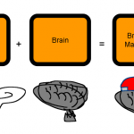

- What It Takes To Be Great
- What It Takes To Be Great 2: AJATT and Malcolm McDowell’s Outliers…wait…
- What It Takes to Be Great 3: Follow-Up
- What It Takes to Be Great 4: Capablanca
- Aim to Fail
- You can have do or be ANYthing, but you can’t have do or be EVERYthing
- Why Do People Who Have All the Time in the World Get Nothing Done?
- How To Accomplish Great Things: Small Victories, Winnable Games
Howdy! Is not a word that I usually use.
By now you’ve probably heard about this already, but just in case you haven’t, let’s talk about it here. Malcolm McDowell, who once tried to destroy the galaxy so that he could re-enter an energy ribbon in space where he could experience Paradise for the r…
OK, not Malcolm McDowell. Malcolm Gladwell. Done gone written a book enbenamed Outliers: The Story of Success. About, basically, what makes the top people the top. What makes them the greatest of all times! What makes the l33t hax0rs of every field pwn so hard.
Executive summary: It isn’t talent. It’s time. 10,000 hours, to be exact. Where have you heard this before? Maybe, I dunno, a little blog by a random Kenyan boy…
I haven’t read the book yet; I’ll probably wait for the Janslation. But I’m already loving what I read about it in the The Guardian (via this post by Golem):
“If you put together the stories of hockey players and the Beatles and Bill Joy and Bill Gates, I think we get a more complete picture of the path to success. Joy, Gates and the Beatles are all undeniably talented…that “talent”, however, was something other than an innate aptitude for music or maths. It was desire.”
“a key part of what it means to be talented is being able to practise for hours and hours — to the point where it is really hard to know where “natural ability” stops and the simple willingness to work [long and consistently] begins. “
But my favorite part is where he discusses a little boy band from northern England that was popular back when our Mums were young:
“The Beatles ended up travelling to Hamburg five times between 1960 and the end of 1962…All told, they performed for 270 nights in just over a year and a half. By the time they had their first burst of success in 1964, they had performed live an estimated 1,200 times, which is extraordinary. Most bands today don’t perform 1,200 times in their entire careers [emphasis added]…
“They were no good on stage when they went there and they were very good when they came back,” Norman says. “They learned not only stamina, they had to learn an enormous amount of numbers — cover versions of everything you can think of, not just rock’n’roll, a bit of jazz, too…when they came back they sounded like no one else. It was the making of them.”
I don’t even like the Beatles; I find their music very hard to listen to. But, I cannot help but respect them for being so diligent. From this description, it seems that their acclaim was well deserved.
What all this is showing is that the path to success, to greatness, to excellence, to ownage in any field is so straightforward, so simple, as to be almost anticlimactic. What I love about Gladwell’s book and the ideas it contains, is how we are seeing the complete removal of all the magic, the mystery[1], the sickening hero-envy and the even more sickening hero-worship[2] that have, up until now, been associated with, you now, people who are l33t.
So if you want to be l33t at anything, you can. All you have to do is show up. If you want to be fluent in a language, cut off your wuss glands and just get on with being in the language. If you want to learn how to draw, get out some paper and start scribbling. If you want to know how to skate, go down to the rink and get on the ice.
And you will suck. For a long time[3]. You will be terrible. Children will be better than you. “Mere” toddlers will talk and skate and draw circles around you. But if you just keep going, you’ll get better. You just will. It’s that simple. It really is…that. freaking. simple.
OK, fine, so, here I am saying how simple it is and “just do it”, and “cut off your wuss glands” [sounds ridiculously painful], but…if it’s so simple why are so many people still not succeeding? Why are there still so few people, you know, owning? And why does it feel so difficult?
Well, there are many reasons. One of them is the fact that that long part in the beginning where you suck, really is long and really does suck. And lots of people — especially adults — lose both hope and face there. This is why adults appear to succeed less than children: adults have the linguistic power to make elaborate excuses and the legal power to choose what to do where and when; kids don’t get that luxury. Britney Spears couldn’t tell her Mum to freck off and stop pimping her to Disney. Even if she could, she was going and that was final, young lady! Regardless of age, it’s hard to see how you’re going to one day be amazing when you clearly are so lame right now: the effort-versus-improvement ratio is just so low in the beginning. My way of coping with that feeling is this:
Forget your position, remember your velocity (at least, that’s what we’ll call it). Forget where you are. It doesn’t matter. All you need to focus on are the two components of “velocity”, in order of priority:
(1) The direction in which you are heading. In plain terms this means showing up: if you are a would-be skater, then actually get on the ice every day; if you are a would-be artist, then actually create art every day. Do something. Anything will do. No quotas, no rules, no plan, no system, no method, just do something. Skater? Don’t even have a goal to skate, just get on the ice with skates on. Want to be a drawing person? Draw a line on paper. Japanese? Turn on the TV. Don’t even try to pay attention, just turn it on. Runner? Put on your shoes, and step outside. Don’t even try to run.
(2) The speed at which you are getting there. Here, the unit of speed is the hour – the magnitude of time you spend each day. So what we effectively mean by speed is “average number of hours per day put in”. In other words, how quickly you are racking up those 10,000 hours.
And forget everything else. First, forget the past; forget it — it’s gone. Secondly, 99% of the time, you should pay no attention to how quickly you are or aren’t progressing; it’s fine — even good — to notice that you’re progressing, just ignore the rate of progress, because no matter how fast it is or isn’t, for most of us post-modern, television-raised kids, it will be longer than 23 minutes, which means it’ll be too slow and therefore too depressing = discouraging = makes you want to quit. Thirdly, more or less let go of the future: don’t worry about ETA (estimated time of arrival), i.e. when you will be good; don’t worry about POS (probability of success), i.e. whether you will ever get good — neither of these are useful pieces of information, and worrying about them won’t help you get there any quicker.
In short, what I do is just treat it like a job (clarification: on the ground, the physical actions that lead to becoming great are as simple as any menial job, but the mindset is a self-/curiosity-/interest-directed one, not one of resignation to victimhood and suffering, nor one of abdication of personal responsibility)…just punch in, punch out. Clock in, clock out. Put in the time. It’s a complete no-brainer — like flipping burgers or eating jelly beans or assembling widgets or sticking lego blocks together. Ever wonder why flight hours are often used as a measure of how good a pilot is? Because the pilot people knew this all along. If you just punch in, success, greatness, “ownage”…will all take care of themselves.
What we call “talent” is merely a phenomenon that naturally and inevitably occurs when someone has done something for a long time — so long that they can observe and manipulate patterns with a speed, accuracy and finesse that are impossible for the untrained eye/hand/mouth/foot. Don’t be intimidated — rack up those hours and you’ll be the man now dawg, too.
By the time you visibly, externally, publicly succeed, it’ll have been so inevitable for so long, so much a part of you and your daily life, so much a fait accompli, what the French call an “accomplished fact”, that only other people will be surprised. This happened to me with Japanese. I never set out to learn Japanese in a specific amount of time. At least initially. I merely said: “I’m going to act Japanese and I’m going to keep acting Japanese until it’s not acting any more”. I no longer cared how long it took, who died, whether Bush actually won the election the first time, I was just going to do it for as long as was necessary to get good.
In a sense, I succeeded because I gave up. I gave up trying to force and control the process. You see, what had happened before with, for example, my kanji study (pre-SRS), is that I would start, and then lose steam and give up for 3 to 6 months at a time. Then after several months I’d be like: “Mother of Bush! If I had been working on it all this time, even just 10 characters a day I would know like 1800 characters by now!!!” I felt worse than that guy who got shot by Dick Cheney, the Vice-President of the United States of America, in the face. I came to the point where I realized that any daily progress was better than no progress. Anything was better than zero. And it was such a low standard (“just do something“) it was such a “come on, man, just try one — it grows out of the ground, it can’t hurt you, maaan, come on, man, you’re black, I heard they do this all the time in Jamaica”[4], that it just naturally expanded to take over my life; I didn’t have to force it; I didn’t have to struggle.
My only goal at the daily level was to just be there (i.e. have listened to even 1 second of Japanese) — that was enough. I didn’t really compare myself to anyone or anything. At the daily level, I didn’t really wish or hope or yearn or despair; that would be as idiotically futile as trying to grow; most of the time, you don’t see kids clench their fists, close their eyes, and try to squeeze out a few inches on their leg bones…they just eat food, run around and sleep. Like a kid, I just…was. I ate my food (Japanese materials), ran around with my Japanese friends [when they weren't too busy], played on the jungle gym (SRS), and fell asleep to a Japanese “lullaby” [the news]. Just being myself, in Japanese.
I wanted to remove that whole “if only I lived in Japan” excuse from the equation. That whole “yeah, if you really wanna learn it, you’ve got to visit the country, man” myth. Anyone who knows English teachers in Japan knows that “living in the country” doesn’t mean jack bollocks all squat[5]. Back in the day, I did not have the money (nor the knowledge of how to make money) to go to Japan, but I had access to Japanese audio, video, text and people. Could I not do something with these? I didn’t know for sure, but I had a hunch that something would happen after a lot of repetition[6], so I gave it a try. Ever noticed how kids watch the same few movies over and over again? Is this coincidence? Or are they trying to figure something out — without their even knowing it? Are kids trying to teach themselves their own language, in some way?
Anyway, let’s wrap up. Remember that the pathetic-seeming things you’re doing right here and now in your vegan pizza-stained sweatpants[7] are the very steps that make up the journey to greatness and therefore are essentially equal to success itself[8]. They are the private victory that necessarily precedes the public victory. As Ralph Waldo Emerson wrote:
“Why all this deference to [Bill Gates] and [The Beatles] and [Tiger Woods]? Suppose they were [l33t], did they wear out [l33tness]?…As great a stake depends on your private act today as followed their public and renowned steps. [You can own, too, be-arch]“.
So keep going. Keep sucking for now. Don’t worry: it’s working…
[1] Are part of their history, along with the secret of GUMMY BERRY JUICE!!!!
[2] During the Olympics this year, I told Momoko (mi esposa), only half-jokingly, that viewers should be legally required to first watch all the thousands of hours of practice that athletes put in, before being given the privilege to watch any actual competition. Then, even Michael Phelps would just be a young man who swims a lot. No one’s performance would really be a surprise [“well of course he can swim fast, my gosh, if I swam that much I ‘d be all over that podium; all this fool ever does is swim!”, would cry the spectators], and there would be far less B.S., athlete-worship and dodgy racial theories. But then, the dodgy racial theory sports book industry might come crashing down, and all those authors might be forced to do proper research…and we wouldn’t want that.
Seriously, though, without denigrating anything the work of people like Phelps, the reason people make so much noise out about him and other athletes stems from a desire — a need — on the part of the mass media industry to manufacture stars, heroes, and people to sell sugar water. Furthermore, white people rather badly needed a homeboy to fill the gaping void Lance Armstrong left, because…damn. Hey, I understand. Like, for me, Star Wars is basically the story of how James Earl Jones led Samuel L. Jackson to his death and then double-crossed Billy Dee Williams. Also, there was a kindly little Japanese man with a skin disease, and a massive space station exploded. Two…massive space stations. Way to go, James Earl Jones.
Back on the topic of watching practices as a prerequisite for watching real performances…I’d love to sit it on the rehearsals of great performers like Michael Jackson.
[3] Yes, longer than the 5-minute montage. Longer than the whole movie. Longer than many movies in a row. There’s no drama and easy-to-see improvement in real life. Just punching in and out. It’s invisible to you, just like growing taller. You’re only aware of it indirectly — either other people tell you, or you look back over time.
[5] The same goes for Mormon missionaries — yes, a good number actually plug in, get really good and grow up to be Kent Gilbert — but plenty of them suck; they have no interest in Japan or Japanese and just wanted to get over this two year hump and back to courting girls called Emily Sorenson. Their pronunciation makes babies’ ears bleed and they are illiterate, which means that if you say anything remotely non-biblical to them, like “solar system”, they will crash faster than Windows 95. I know. I went to a Mormon university and even programmed at the Missionary Training Center. In general, a lot of Mormon missionaries aren’t so much good at languages as they are better-than-most-Americans, which is good enough for government work (NSA, CIA, TLA) but not good enough to even read a newspaper. Which is fine, I guess, because it seems that when the American intelligence community needs information about another country, they just make it up anyway (“I dunno, dude…they’re brown people, right? Just say they were planning to bomb something, I dunno…we need this NIE out today, man, come on…”). Oooo…someone’s getting his phone tapped today.
Having said that, I still love Mormons: kindest, sweetest people ever…girls called Emily Sorenson are always baking cookies…Mmm. Sugar, refined flour, Crisco.
[6] Ever notice how you’re often easily able to remember the chorus of a pop song word for word, but not so much the other verses? Hmm…I wonder if it has anything to do with the chorus getting repeated anything from 3 to 10 times more than any other part of the song, naturally leading to 3 to 10 times the exposure. I’m just saying, man…I’m just saying.
[8] Take climbing a mountain. Which step matters most? The first? The last? That one right in the middle? The odd-numbered ones? Weren’t they all necessary?
Related Posts
 Why Do You Keep Spending Your Time Doing Things So You Can Have Fun Instead of Just Doing Fun Things?
Why Do You Keep Spending Your Time Doing Things So You Can Have Fun Instead of Just Doing Fun Things? Why Do You Hate All the Best Parts of Being a Gaijin in Japan?
Why Do You Hate All the Best Parts of Being a Gaijin in Japan? Identity and Self-Fulfilling Prophecy
Identity and Self-Fulfilling Prophecy What It Takes to Be Great 4: Capablanca
What It Takes to Be Great 4: Capablanca The Expert Mind
The Expert Mind- Why You Should Keep Listening Even If You Don’t Understand
Great post! I love your rambling (in a very, very good way – attack the same point from several different angles) motivational posts the best. It just makes so much sense when you write like this. Best blog ever!
Great Blog! I read almost your entire site the last two weeks (work is boring) and your method corresponds well with my experience of learning languages (eg Polnish – only through exposure and curiosity I can converse while Spanish – after NINE years in high school and university I still can’t make a sentence).
And while the following question relates to that entry (which does make sense: take Mozart for example: the kid got good because his dad pushed him day in day out for years – no other way than to be better than the rest, he trained more than the rest). sorry my question: your sentence ‘theory’ for grammer and vocab with help of SRS has me convinced. BUT what do I put in Q and A of my SRS card?
Btw, I’m using this method not for an Asian language, so maybe you already gave some examples in Cantonese/ Japanese and I simply didn’t get them. I currently use an audio of sentences in Q and written form in A (kind of dictation) but is that all? and I still don’t learn the meaning of that sentence. What do you actually mean with ‘meaning’?
The sentence makes sense, otherwise I wouldn’t have put it in SRS but I don’t want to use other words to describe it, because that would be output and I really can’t write. So my dictation-method works for learning to listen and write but not for grammar and vocab. Help, please!
Does that even makes sense, I have more and more questions while I’m writing this so now I will just stop and ponder the problem some more. Maybe anyone could give a short description? THX
PS. I’ve never read so often the word Gestalt as you use it here. lol
YES! Very true. It’s the Golden Rule of Language Learning: people argue about what’s the most efficient way to learn the language, but the truth is, anything will work as long as it includes regular exposure.
OMG, when I first saw this guy on cnn over thanksgiving holiday, i was immediately thought of this blog. It’s so cool how you saw it too. It really does take away the mystery. The only problem now is for people to find what they really want to devote their time too. Funny thing is, even if you just do a little, you get better, so if you want to do like a couple of little things, you could get waaayyy better at a couple of little things.
“I would start, and then lose steam and give up for 3 to 6 months at a time. Then after several months I’d be like: “Mother of Bush! If I had been working on it all this time, even just 10 characters a day I would know like 1800 characters by now!!!””
Basically me. :/
So weird. Two of the sites I regularly read published an article about Gladwell’s outliers concept today.
@Jen:
I’ve learned more than once that it helps a great deal to actually read, and reread posts in this blog. More than once I’ve had a question, reread a post I read before, and then found the answer. Anyway…
I use the Audio-Card model as well. Audio front, sentence back. Here is (a much more detailed version of) my cards:
=============================
Front:
Back:
日本語の文法はあまり難しくないんです。
漢字は難しいですが、「日本語の文法はあまり難しくないんです。」
にほんご 【日本語】 – Japanese (language);
ぶんぽう 【文法】 – grammar;
あまり – not… much; not very….
むずかしい 【難しい】 – hard; difficult;
Japanese [possesive] grammar [as for] not very difficult is.
Japanese grammar is not very difficult.
Full Sentence:
Kanji are difficult, but Japanese grammar is not very difficult.
Source: All About Particles by Naoko Chino
=============================
If I understand it correctly, you’re suppose to listen to the audio, understand it and repeat it back vocally. Understand the function of each word, write it, and then flip and check how well you did.
I don’t think you need as much information as I put here for each one, but I did it for the sake of completeness. Just put what you need to understand, I think.
Don’t take my word for it, though. It’s better if you find and read relevant posts by Khatzumoto.
Hm, that’s odd.. when I posted it removed what I had written for the front.
Should say:
…
Front:
[Audio]
[Picture]
Back:
…
Great post Katz!
@John
Thanks a lot. that helped already quite a bit. True, true rereading should avoid these kind of questions. I always found info on the idea but nothing about the nitty-critty of the system. But good that I printed out several articles and I ‘ll make myself a booklet out of it. including the answer to my current question I image it will be a good resource for questions on studying and motivation.
@DAVID
so sorry!!! ok, multitasking is soo not my thing. ok, thanks David for your help.
sorry again.
Another great post by Khatz!!
I’ve actually left my Kanji aside like completely…
First week was great, did 20 a day. Second week got only 60 done during the whole week. Third week, um yeah no new ones and doing SRS only once in a while. Conclusion, I’m up to 200 kanji when I should be past the 300.
I’ve blamed my poor performance on my college since I’m in final exams peroid, but yeah that’s a bunch of bullocks, lol. I have been listening to Japanese music everyday though, that hasn’t changed since I started, but yeah I need to get back on my feet.
I think this post just came in the nick of time for me as I have just hit a serious ‘wall’ around the 1,700 mark in studying the kanji. MUST KEEP GOING or a life mediocrity awaits me
Well, it seems disliking The Beatles is a new kind of suck you just have to get over!
The road really is long, isn’t it? But you either keep going, or you don’t. You either quit, or you don’t, and if you don’t quit, you get better… But that isn’t quite true, the level you are at takes a certain amount of maintenance.
When I used to weight-lift, I noticed that if I worked out only once a week, I could maintain my level of fitness- it took more than once a week to improve. I think most skills are like this- I’ve played volleyball for over 10 years, and the amount of enjoyable hours I’ve put in is incredible. However, after college (and due to winter) I didn’t usually play consistently- I’ve often stopped for months (years?) at a time. When I get back on a court it usually doesn’t take me long to get back in the swing of things, but that doesn’t mean I can count all those hours and say “ok, I’ve played volleyball for 5000 hours, I should be pretty good.” Language is the same way- maybe it takes 30 minutes of Japanese a day to maintain my current level- if I don’t do that 30 minutes, I get worse and have to spend time the next day making it up. And the longer you take off, the faster the rate of knowledge loss increases. I would also guess that as you get better it takes more time to maintain, but you also get worse more slowly (like the volleyball example, I may stop for a year, but I don’t have to go back to square one).
I think this is one of the reasons beginners are so frustrated, they work hard for a month, two months or longer but then they take a break and so much of that hard work leaks away. If they would have just consistently practiced, they would have been better off. And this is coming from a very inconsistent person, which likely explains why I’m good at many things, but not great at anything. Curse you atrophy!
“a key part of what it means to be talented is being able to practise for hours and hours — to the point where it is really hard to know where “natural ability” stops and the simple willingness to work [long and consistently] begins. “
That’s exactly what my guitar teacher told me…
Whenever people menton that I’m “really good” at Japanese… I just point out that I’ve been at it since high school and lived there for six years. Seriously. It’s not that I’m smart. It’s just that I’ve been doing it foreeeeeever.
Argh. Now I just gotta motivate myself to do more of other stuff I need to get good at!
I gotta get that book.
“Are part of their history, along with the secret of GUMMY BERRY JUICE!!!!”
Screw you man, now I have to try and find that show in Japanese and it probably doesn’t even exist.
Darned blogosphere, always resurrecting my childhood without warning…
Just found this very useful site. You put in any Japanese word or phrase, and it searches the web for sentences using that word phrase, extracts them and puts them into a list for you. Then it links the your keyword in each sentence to the website it pulled it from.
jrek.ta2o.net/
@Jonathan:
I’d say this is some pretty good evidence that it does exist:
@scout:
You rock.
Hey Khatz
I recently stumbled across this beauty, which I found to be hilarious: www.pinyin.info/readings/texts/moser.html
@Maya
Wow…I thought if I closed my eyes and clicked my heels together, stupidity like this would just go away.
@ Maya
Throughout the whole article I kept going “No, wait … he’s gonna say he’s joking …. now….ok,now…..omg I think he may actually be serious…” And then slaming my head onto my keyboard.
Fair enough to believe that yourself. People believe all kind of crazy things. But, for me, spreading that garbage is disgusting, and downright un-professional from someone in their positon. And damaging to; he basically tells people to not even bother with Chinese, coz they’ll never be any good.
He makes an interesting statement in the 11th footnote though:
“I have noticed from time to time that the romanization method first used tends to influence one’s accent in Chinese. It seems to me a Chinese person with a very keen ear could distinguish Americans speaking, say, Wade-Giles-accented Chinese from pinyin-accented Chinese.”
This I think is why extensive listening practice, before you even attempt to read the language, is an important part of developing a good accent.
Another very helpful site:
language.tiu.ac.jp/
Copy and paste any Japanese into this, click the 日->日 button, and it breaks down each word with a J-J definition on the right hand side with the English also under it.
Rob, thanks for the link, that’s a pretty useful one.
Malcolm McDowell also sang Singin’ in the Rain while knocking an old man about and stripping his wife in A Clockwork Orange.
Wow, amazing article, after listening to some now habit audio, you kinda gave me wings!!! Thank you for your existnig!!!
Hey
The 10,000 hour business. As far as Japanese, Mandarin, Arabic and Korean are concerned 10,000 hours looks about right.
The FSI students need around 4000 hours to reach level 3 (self-study hours included). Levels 4 and 5 are uncharted territory – no course will take you that far and from what I was able to read about it, these levels require exponentially more study time. It is possible to conclude and guesstimate from this information that in order to reach level 4+ (native-like) most students will indeed need around 10,000 study hours.
Just thought you’d like to know, the Japanese translation’s available! It’s called 天才! 成功する人々の法則
tinyurl.com/mazqy7
I saw it in a bookstore today and shouted “I’VE BEEN WAITING FOR THIS!” :/
The way you live your life affects your babies [or DNA]
“Genetics load the bullet, but environment pulls the trigger”
…random quote